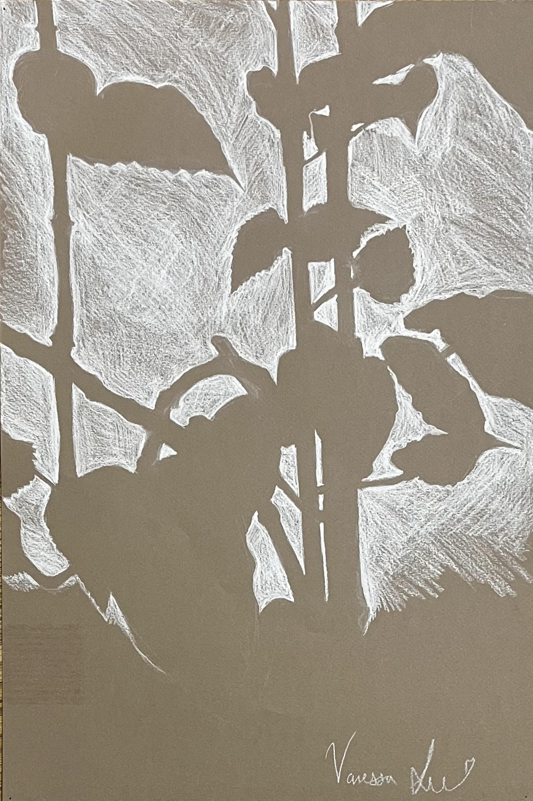
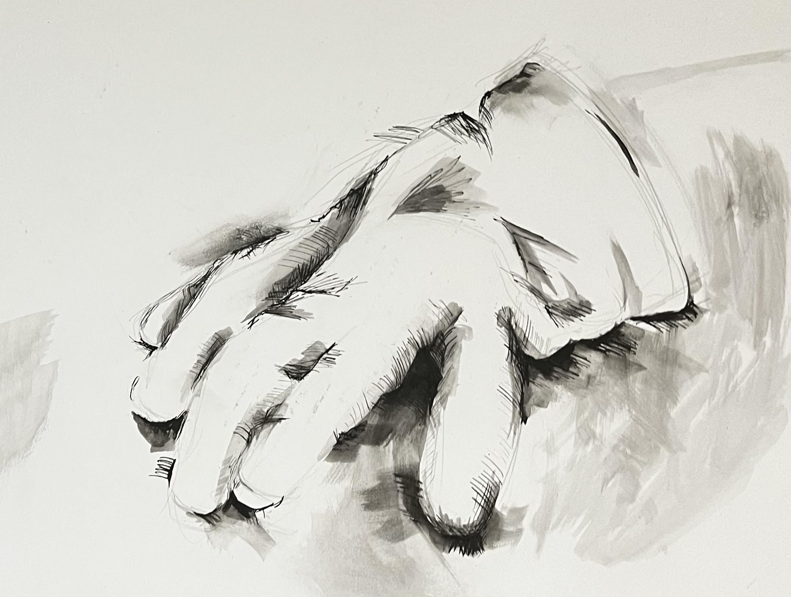
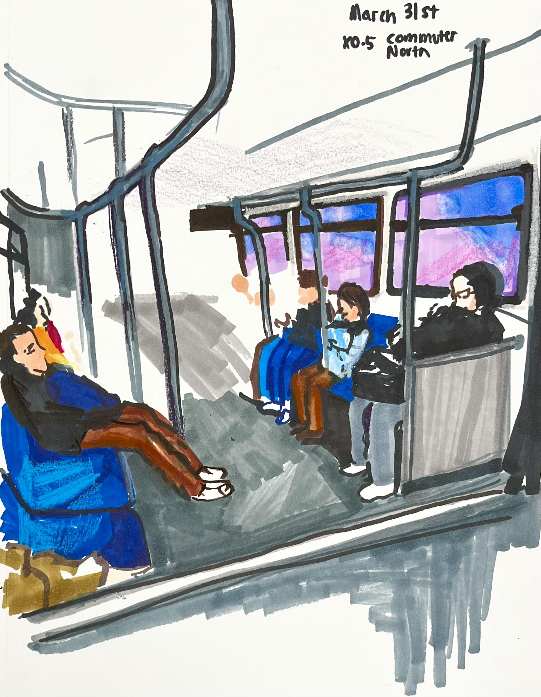
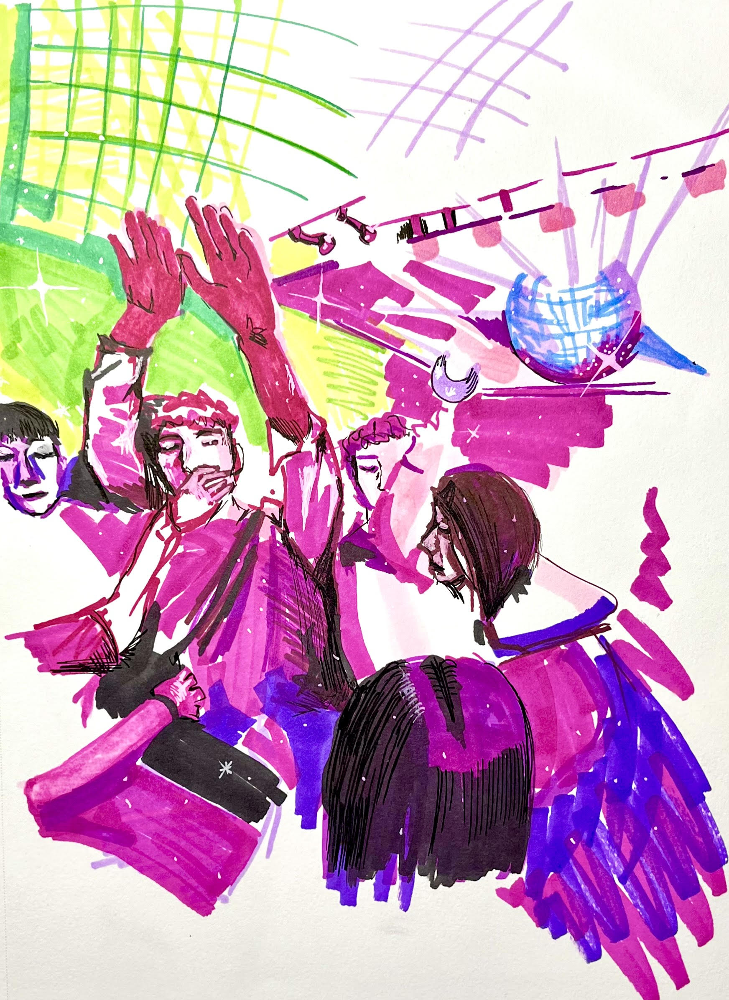
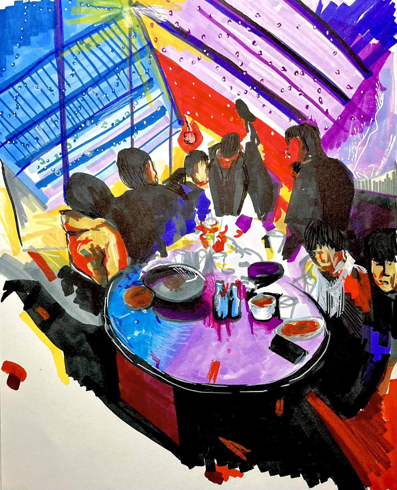

Classwork
Drawing & Observation
Nude croquis


medium: watercolor, charcoal, colored pencil paper
Class Sketches
 medium: watercolor, charcoal, colored pencil on paper
Methods of Inquiry
Taking Time Project
  
Taking the time to document the memories of everyday life
mixed medium: marker, pen, colored pencil, oil pastel on paper
Final Project


Based on a Times Square Article about the societal intricacies of donor parenthood and women's reproductive health.
mixed medium: paper mache sculpture with string over acrylic on canvas